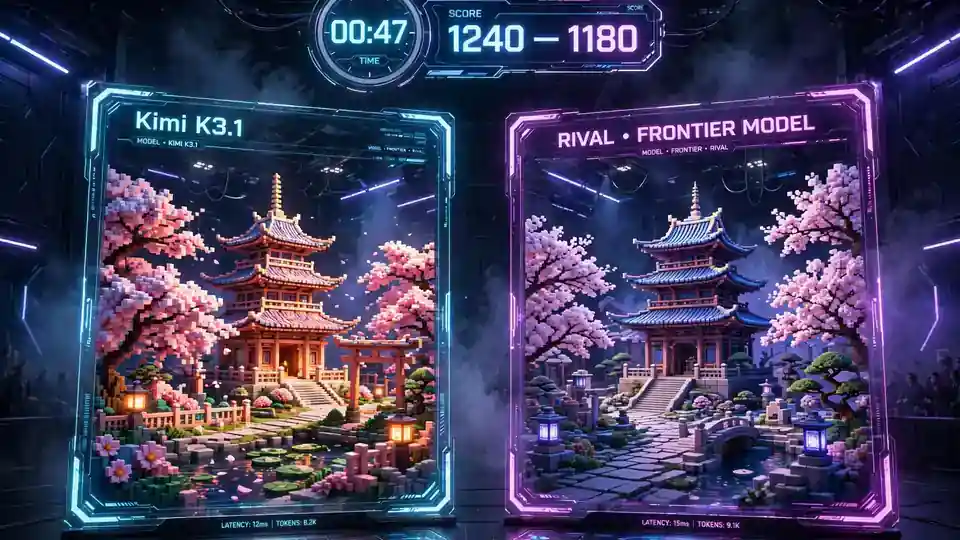

Kimi teases K3.1: Moonshot's official video names its next model — and a mysterious 'Kibitz' on the Arena looks a lot like it
- Who: Moonshot AI, via the official @Kimi_Moonshot account.
- What: A 24-second retro-computer-style teaser video shows ‘Model: Kimi K3.1’ in a Kimi Code terminal, generating complex 3D scene code with Three.js.
- When: Posted October 23, 2026.
- Paper trail: the ‘kimi-k3-1’ identifier appeared in Moonshot's API platform in late September, and in Kimi Code's model-switching configuration on October 21.
- Arena signal: an anonymous model named ‘Kibitz’ appeared on the Arena on October 22; tokenizer evidence and Kimi's arena codename pattern (Kiwido, Kiwire, Kivine → Kibitz) suggest it is K3.1 — unconfirmed by Moonshot.
- Unknown: release date, specifications, pricing, benchmarks and open-weight status — Moonshot has confirmed none of these.
Moonshot AI has stopped being coy. On October 23, the company's official @Kimi_Moonshot account posted a 24-second retro-computer-style teaser showing a Kimi Code terminal writing complex Three.js 3D scene code — with “Model: Kimi K3.1” displayed in the corner of the screen. It is the first time the company has put the K3.1 name in official material, and it lands a month after the identifier first surfaced in Moonshot's API platform in late September.
The clip itself is pure signal and zero substance: a vintage terminal aesthetic, a coding agent doing its thing, a model name in the corner. No release date, no specifications, no pricing, no benchmarks. Moonshot's message is the oldest one in the model business — it's coming — but the fact that Kimi is teasing at all suggests the launch window is near.
The Kibitz mystery
Here's the interesting part: the new model may already be running in public under an alias. On October 22, a day before the teaser, an anonymous model named “Kibitz” quietly appeared on the Arena — and developers immediately started asking whether it was K3.1 in disguise (TestingCatalog).
The evidence is circumstantial but unusually tidy. The model-tracking account @aitrackerbot ran tokenizer tests: when asked to reproduce verbatim 11 special token strings characteristic of the Moonshot family, Kibitz failed across two consecutive rounds — exactly matching the behavior of other Kimi models — while control models from seven other labs reproduced them correctly. Then there's the naming pattern: Kimi K2.5, K2.6 and K3 were previously arena-tested under the codenames Kiwido, Kiwire and Kivine. Kibitz slots neatly into the sequence.
Early tester impressions are strong. One tester pitted Kibitz against models including GPT-6 Astra Max and Claude Opus 5.5 on a single-prompt task — building a 3D voxel courtyard with a pagoda, trees and cherry blossoms from one HTML file — and reported that Kibitz delivered a finished, richly colored result in roughly a third of the time its rival took. That is one tester's account, not a benchmark, but it's the kind of result that made the rumor stick. The Arena's own account added fuel on October 23, posting: “A new model from @Kimi_Moonshot is coming. Stay tuned for where it lands in the Arena.”

The paper trail
The teaser caps a week of leaks. On October 21, screenshots surfaced of a model-switching warning in Kimi Code naming Kimi K3.1, and a day earlier the kimi-k3-1 identifier had been found in Moonshot's API infrastructure. Community watcher Chris claimed the model will release before Tuesday next week as a low-cost, state-of-the-art open-source model — but that remains unverified chatter, not a company statement.
What we still don't know
Almost everything that matters: context length, benchmark scores, pricing, the final feature set, and whether K3.1 ships open-weight like its predecessor. Watchers widely expect open weights — Kimi K3 was open-weight with published weights on Hugging Face — but Moonshot hasn't said. And the Kibitz identification, compelling as the tokenizer evidence is, is still unconfirmed by the company. For now, the facts are these: a name in a corner of a screen, a very fast anonymous model on the Arena, and a launch that looks days — not months — away.
Frequently asked questions
Has Moonshot officially confirmed Kimi K3.1?
Yes. On October 23, 2026, the official @Kimi_Moonshot account posted a 24-second teaser video showing “Model: Kimi K3.1” in a Kimi Code terminal as it generated complex 3D scene code with Three.js. It is the first official material naming the model, following earlier unofficial sightings of the kimi-k3-1 identifier in Moonshot's API platform and Kimi Code.
Is the anonymous ‘Kibitz’ model on the Arena really Kimi K3.1?
Probably, but it is unconfirmed. Kibitz appeared on the Arena on October 22, 2026. The evidence linking it to Moonshot is tokenizer tests by @aitrackerbot showing Moonshot-family behavior, and the naming pattern of previous Kimi arena codenames (Kiwido, Kiwire, Kivine → Kibitz). The Arena's own account has also said a new model from Kimi is coming. Moonshot has not confirmed the identification.
When will Kimi K3.1 release, and will it be open-weight?
Moonshot has announced no release date, specifications, pricing or benchmarks. One community watcher claimed a release before next Tuesday as a low-cost open model, but that is unverified. Open weights are widely expected because Kimi K3 was open-weight, but Moonshot has not confirmed it.